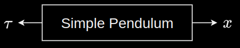

Last modified .
Euler integration is based on approximating the next discrete state by linearising the continuous dynamics using Taylor series expansion.
When a brick is dropped, its velocity goes from some non-zero value to 0 instantaneously, the moment it hits the ground. The acceleration goes to infinity. Therefore, it is not possible to represent such discontinuous jumps with an ODE. In discrete time, it would be represented as a simple instantaneous jump.
A system's dynamics can be abstracted as a plant that will output the next state $x$, given the torque applied $\tau$ and the current state. This abstraction permits a system viewpoint.
